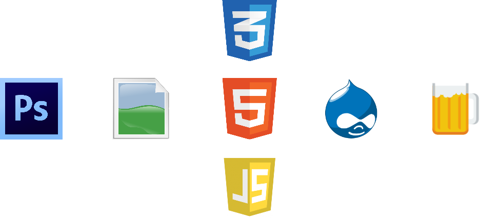

Be a lazy front-end
developer with kick-ass
page performance
Sébastien Corbin - @SebCorbin
Who am I?
Sébastien Corbin - @SebCorbin
Question yourself
How many clicks per day?
How many characters typed per day?

I'm here for your carpal tunnel syndrome !
Basic integration workflow
Real integration workflow
Script everything!

Photoshop

Illustrator
More advanced, JavaScript API (gist)
{kind=link}
Not ... Fast ... enough!

On the HTML/CSS/JS side: use web frameworks
Bootstrap
Advantages
- active community (numerous snippets)
- mobile-friendly
- possibility to overwrite everything
Drawbacks
- CSS Overhead (
border-radius: 0px) - "Everything looks the same"

See the
Bootstrap showcase
Tips:
- Take time to read all of variables.less
- Think before overwriting any selector
- Comment any .less include that is not used
- Use LESS/SASS functions/mixins all you can:
:beforeand:afterfor icons- everything with a parameter
Is it worth the time?

(most of the time: yes)

Gulp
All-purpose task automator
- NodeJS-based
- Alternatives: Grunt, Brunch
- Stream-based (less I/O than Grunt)
- Less plugins than Grunt
What kind of tasks?
- Convert LESS/SASS to CSS
- Minify/Obfuscate CSS/JS
- Check JS/SASS syntax
- Create sprites/icon fonts
- Test CSS regressions
- Run JS tests
- Analyse/Tackle performance tasks
- Reload browser on change
- Add/Commit/Push files to Git repo
- Upload files to FTP
# Prérequis, installer NodeJS
npm install --global gulpnpm install --save-dev gulp-cssmin # Ecrit la version dans package.jsonvar gulp = require('gulp');
var cssmin = require('gulp-cssmin');
gulp.task('default', function () {
gulp.src('src/**/*.css')
.pipe(cssmin())
.pipe(rename({suffix: '.min'}))
.pipe(gulp.dest('dist'));
});Then launch gulp in your terminal
Plugins
- Bundled : watch, run task everytime a file is changed
- 1482 plugins as of today
- Some useful examples:
- autoprefixer: prefix automatically CSS3 vendor-specific properties
- livereload: reload automatically a browser page when a task ends
- criticalcss: compute required above-the-fold CSS for inlining
- sourcemaps: map uncompiled CSS/JS referenced in HTML element
- base64: convert and inline small images to base64
var gulp = require('gulp');
var uglify = require('gulp-uglify');
var jshint = require('gulp-jshint');
var less = require('gulp-less');
var cssmin = require('gulp-minify-css');
var concat = require('gulp-concat');
var gzip = require('gulp-gzip');
var imagemin = require('gulp-imagemin');
var rename = require('gulp-rename');
var sourcemaps = require('gulp-sourcemaps');
var pngquant = require('imagemin-pngquant');
var iconfont = require('gulp-iconfont');
var spritesmith = require('gulp.spritesmith');
var use_sourcemaps = true;
// Concat and minify JS, reading map.json
gulp.task('js', function () {
var map = require('./js/map.json'), list = [];
for (var i in map) {
if (map.hasOwnProperty(i) && map[i]) {
// Make relative to drupal path
list.push('../../../../' + i);
}
}
var pipe = gulp.src(list);
if (use_sourcemaps) {
pipe = pipe.pipe(sourcemaps.init());
}
pipe = pipe.pipe(concat('script.min.js'))
.pipe(uglify());
if (use_sourcemaps) {
pipe = pipe.pipe(sourcemaps.write('./maps'));
}
return pipe.pipe(gulp.dest('./dist/'))
.pipe(gzip())
.pipe(gulp.dest('./dist/')).on('error', errorHandler);
});
// LESS compilation
gulp.task('less', function () {
var pipe = gulp.src('./less/style.less');
if (use_sourcemaps) {
pipe = pipe.pipe(sourcemaps.init());
}
pipe = pipe
.pipe(less()).on('error', errorHandler)
.pipe(cssmin()).on('error', errorHandler)
.pipe(rename({suffix: '.min'})).on('error', errorHandler);
if (use_sourcemaps) {
pipe = pipe.pipe(sourcemaps.write('./maps'));
}
return pipe
.pipe(gulp.dest('./dist/')).on('error', errorHandler)
.pipe(gzip()).on('error', errorHandler)
.pipe(gulp.dest('./dist/')).on('error', errorHandler);
});
// Image optimisation
gulp.task('images', function () {
return gulp.src(['./img*/*', './dist*/sprite.png'])
.pipe(imagemin({
progressive: true,
use: [pngquant()]
})).on('error', errorHandler)
.pipe(gulp.dest('.')).on('error', errorHandler);
});
// Icons
gulp.task('icons', function () {
return gulp.src('svg/*')
.pipe(iconfont({
fontName: 'iconsfont',
appendCodepoints: true,
normalize: true
}))
.pipe(gulp.dest('./dist/'))
});
// Sprites
gulp.task('sprite', function () {
var spriteData =
gulp.src('img/sprite/*.*') // source path of the sprite images
.pipe(spritesmith({
imgName: 'sprite.png?' + (new Date).getTime(),
cssName: 'sprite.less',
algorithm: 'binary-tree'
}));
// output path for the sprite
spriteData.img.pipe(rename('sprite.png')).pipe(gulp.dest('./dist/'));
// output path for the CSS
spriteData.css.pipe(gulp.dest('./less/'));
});
gulp.task('default', ['jshint', 'js', 'sprite', 'images', 'less', 'icons']);
gulp.task('watch', function () {
gulp.watch(['./js/*', '../../modules/**/*.js'], ['js', 'jshint']);
gulp.watch('./less/*.less', ['less']);
gulp.watch('./img/*', ['images', 'sprite', 'less']);
gulp.watch('./svg/*', ['icons']);
});
// Handle the errors
function errorHandler(error) {
console.log(error.toString());
this.emit('end');
}Hmmm, still too many Alt+Tab...

What if we could code directly in the browser
and see our changes live?!?
Meet the powerful Chrome DevTools
Sourcemaps links take you directly to the source code at the right selector
Provided features:
- Syntax highlighting
- Shortcuts
- Basic autocomplete
- Simple search and navigation
- Link to local files
- Reloading of CSS files
Demo

♬ ... elevator music ... ♪
Clever Quotes
These guys come in two forms, inline:
“The nice thing about standards is that there are so many to choose from”
and block:
“For years there has been a theory that millions of monkeys typing at random on millions of typewriters would reproduce the entire works of Shakespeare. The Internet has proven this theory to be untrue.”
Intergalactic Interconnections
You can link between slides internally, like this.
Speaker View
There's a speaker view. It includes a timer, preview of the upcoming slide as well as your speaker notes.
Press the S key to try it out.
Export to PDF
Presentations can be exported to PDF, here's an example:
Global State
Set data-state="something" on a slide and
"something"
will be added as a class to the document element when the slide is open. This lets you
apply broader style changes, like switching the page background.
State Events
Additionally custom events can be triggered on a per slide basis by binding to the
data-state name.
Reveal.addEventListener( 'customevent', function() {
console.log( '"customevent" has fired' );
} );
Take a Moment
Press B or . on your keyboard to pause the presentation. This is helpful when you're on stage and want to take distracting slides off the screen.
Much more
- Right-to-left support
- Extensive JavaScript API
- Auto-progression
- Parallax backgrounds
- Custom keyboard bindings